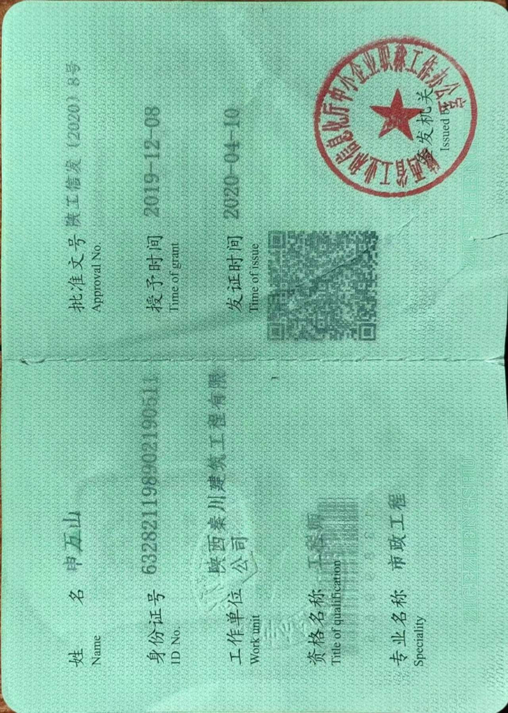
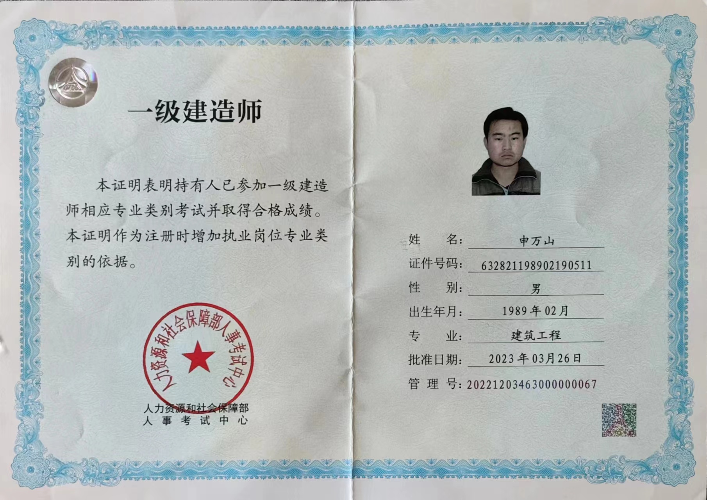
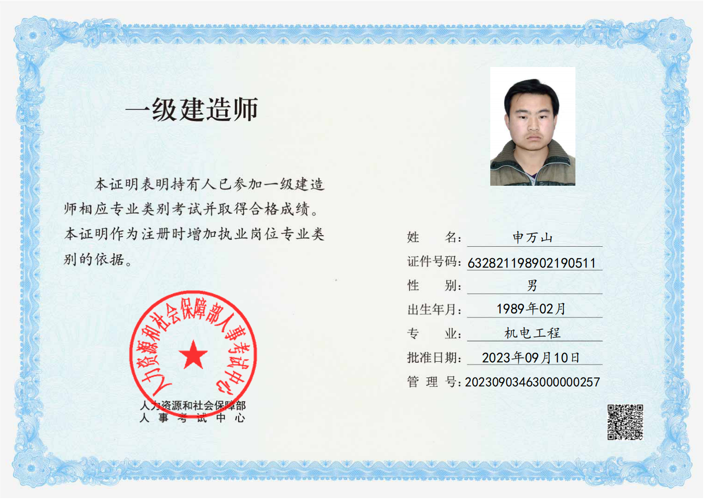
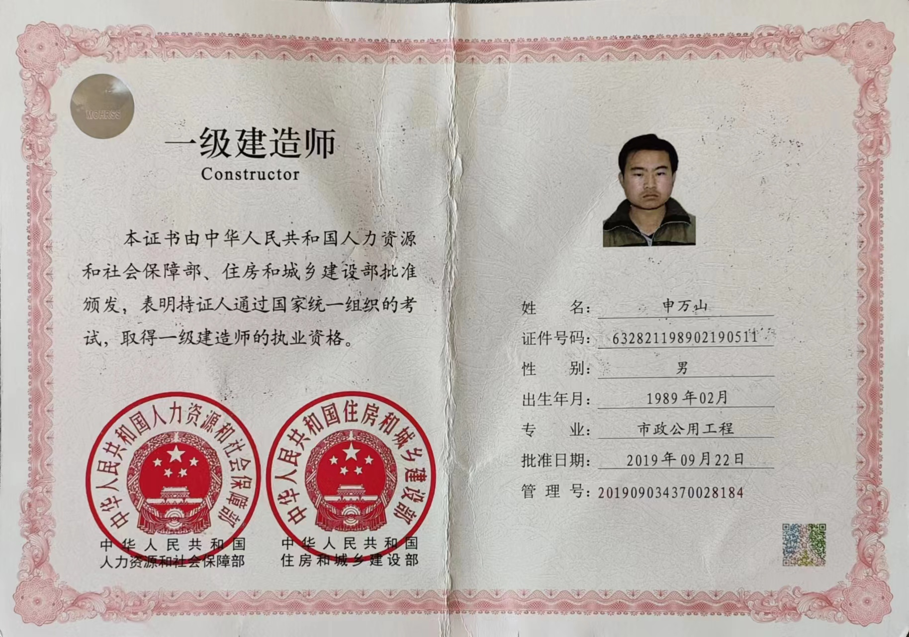
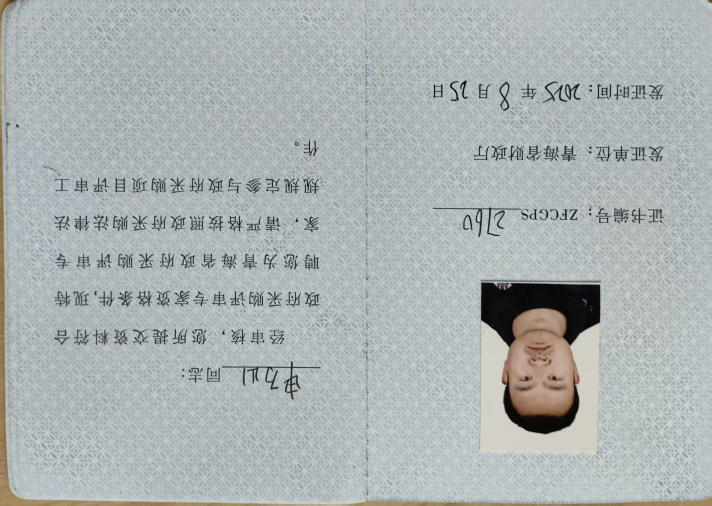
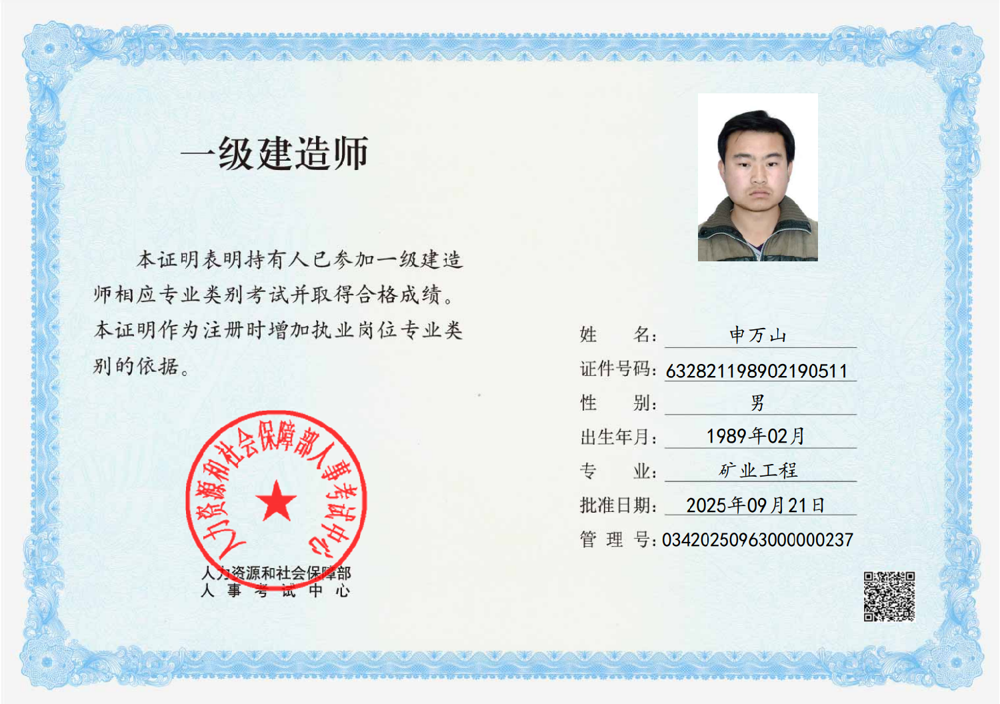
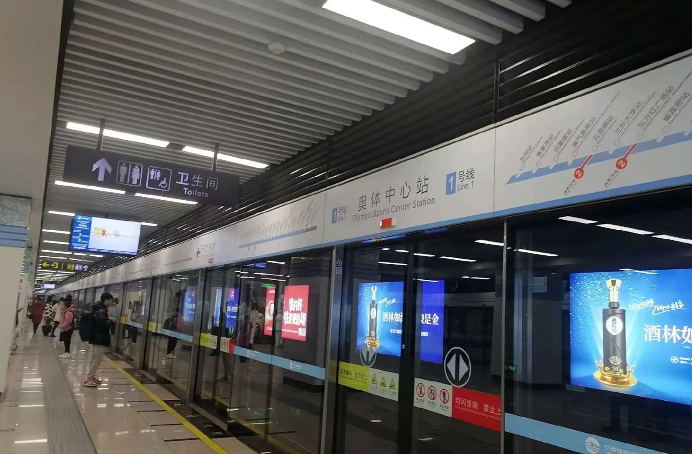
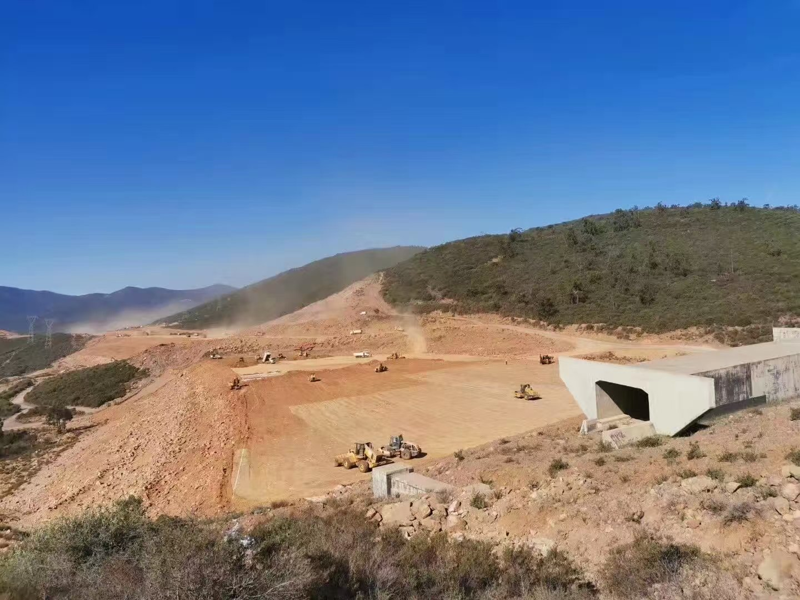
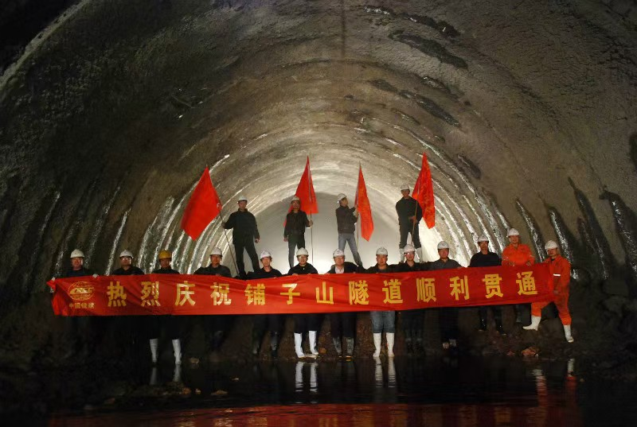

| 姓名 | 申万山 |
| 出生年月 | 1989年2月 |
| 学历 | 本科（全日制） |
| 专业 | 交通工程（全日制） |
| 毕业院校 | 长安大学 |
| 毕业时间 | 2010年7月 |
市政 · 建筑 · 机电 · 矿业
国家人力资源和社会保障部颁发，全国通用，建设行业最高执业资格。
省级建设工程评标专家库
入选省级专家库，具备政府投资项目评审与评标资格。
市政工程专业
省级人力资源和社会保障部门评审的专业技术职称。

一级建造师（机电）

一级建造师（建筑）

一级建造师（矿业）

评标专家证书

安全员B证

职业资格证
点击证书可放大查看
工业与民用建筑施工技术、施工组织设计、E筋钢筋翻样、品茗算建模、工程质量管理
城市道路、桥梁、亮化工程（昆仑大道、群星路等）、管网施工与养护，市政公用工程管理
地铁车站施工、人防工程、轨道工程、项目统筹管理
露天矿采剥工程、计划排布、炮孔布置、收方计量、现场技术管理
铁路客运专线施工、路基工程、桥梁工程、隧道工程
施工方案编制、技术交底、图纸审核、CAD绘图、竣工图制作、施工资料归档
RTK、全站仪、水准仪测量、进度控制、质量控制、安全管理、成本管理
参与成绵乐铁路客运专线铁路建设，担任路基技术员、桥梁技术员，是职业生涯的起点。
参与山西中南部铁路通道项目，担任路基技术员、隧道技术员，负责铁路路基与隧道施工技术管理。
参与甘肃天域制药厂新建项目，担任房建技术员，负责制药厂厂房建设施工技术与质量管理。
参与兰州61243部队士官公寓楼项目，担任房建技术员，负责现场施工管理及质量监督，积累了扎实的房建施工经验。
参与阿尔及利亚东西高速公路贝贾亚连接线项目（PK92-PK100段），担任路基技术负责人，执行国际工程标准，负责现场施工技术管理与协调，积累了宝贵的海外工程实战经验。
兰州地铁一号线奥体中心站人防工程项目担任工程部长，负责现场施工技术管理、进度控制及质量监督，协调各专业工序衔接，是西北地区重要城市轨道交通工程。
统管各项目（昆仑大道亮化、群星路下穿通道亮化、城西客运站亮化、城北客运站亮化等），全面负责工程部日常运营管理，统筹项目进度、质量与安全。
依托专业技能，在拼多多、闲鱼等平台承接系统安装、钢筋翻样、土建建模等工程相关业务，积累了多元化的技术实战经验。
参与格尔木火电厂项目建设，担任化验楼、启动锅炉房、水泵房等设施的技术负责人，把控现场施工质量与技术方案。
参与格尔木胜华矿业索拉吉尔铜矿采剥工程，负责计划排布、工作面布置、炮孔布置、收方计量等技术管理工作。

中铁十四局
工程部长
担任兰州地铁 1 号线奥体中心站人防工程项目工程部长，全面负责地下人防工程的施工技术管理与项目全流程管控工作：

中铁十四局
路基技术负责人
担任该路段路基技术负责人，全程主导 PK92-PK100 段路基施工的技术管理、质量管控、进度协调与对外沟通工作，积累了丰富的海外公路项目施工管理经验，熟练掌握海外公路工程的施工标准与管理流程。

中铁十四局
路基技术员、隧道技术员
担任路基技术员期间，负责路基施工全流程管控，重点把控每层压实度、铺筑厚度，以及路基填料的质量与施工工艺；
担任隧道技术员期间，全程参与 Ⅱ-Ⅴ 级围岩的隧道施工，对各类围岩的初期支护、二次衬砌施工技术有全面的掌握与丰富的现场管控经验。
中铁十四局
路基技术员、桥梁技术员
主要负责路基软基处理施工，包括水泥搅拌桩、高压旋喷桩的现场施工管控；同时负责桥梁下部结构施工，涵盖承台、墩柱的施工技术指导与质量把控，全程参与现场施工组织与技术管理工作。
中铁十四局
房建技术员
参与部队士官公寓楼建设项目，担任房建技术员，负责营房主体施工、别墅装修的现场技术管理与质量把控，熟练掌握部队营房、职工公寓类建筑的建设标准与质量验收规范。
中铁十四局
房建技术员
全程参与厂区厂房、办公楼及厂区道路的建设施工，负责现场技术指导、施工质量管控与进度协调，熟练掌握房建工程相关的施工规范、质量验收标准与安全管理要求。
感谢您查看我的个人网站。如果您对我的经历感兴趣，或有任何合作意向，欢迎通过以下方式与我取得联系，我将在第一时间回复您。